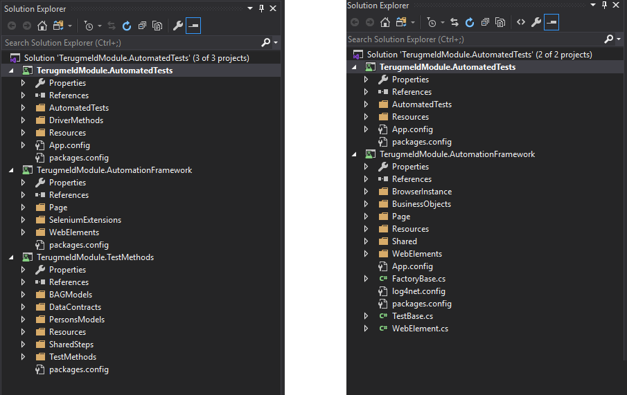

Created: 2019-12-13 Fri 11:27
TMV is an application meant to aid municipalities in requesting changes in the governamental data on entities and objects pertaining to the said municipality.
Once upon a time there was a guy named John. After a certain intervention John became Jane. Now, Jane needs to go to municipality and change her info. At the municipality the clerk uses TMV issue a request to change: - Name from John to Jane - Sex from M to F.
School of Centric course.School of Centric course.
Image from: https://hellogiggles.com/reviews-coverage/tv-shows/the-office-auction/

| Old value | New Value | |
|---|---|---|
| Maintainability index | 32 | 69 |
| Cyclomatic complexity | 27 | 1 |
| Class coupling | 17 | 10 |
| Lines of code | 159 | 18 |